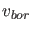
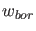
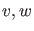

It is possible to adapt the problem while generating the fold curve.
This call updates the auxiliary variables used in the defining system of the computed branch. The bordering vectors  and 
may require updating since they must at least be such that the matrices in (56) and (57) are nonsingular. Updating is done by replacing and by the normalized vectors  computed in (56) and (57) respectively.